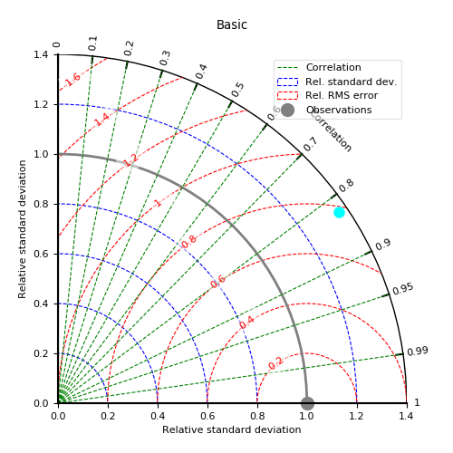
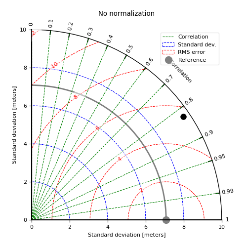
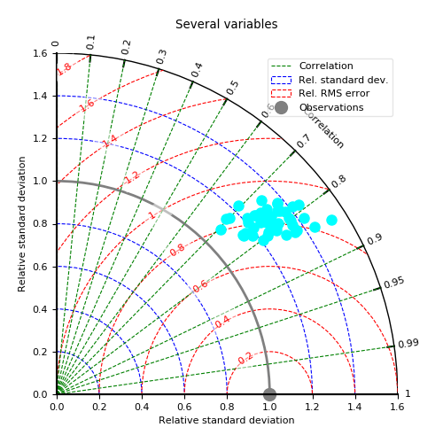
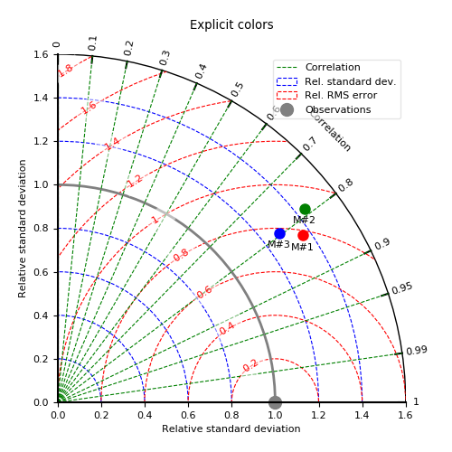
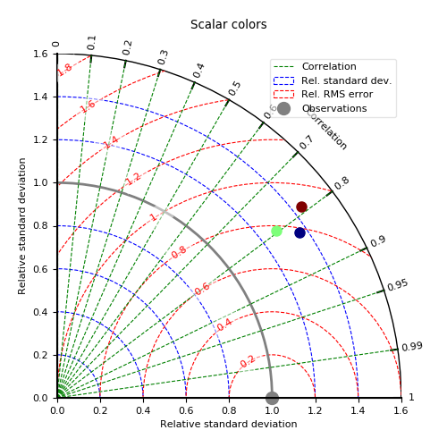
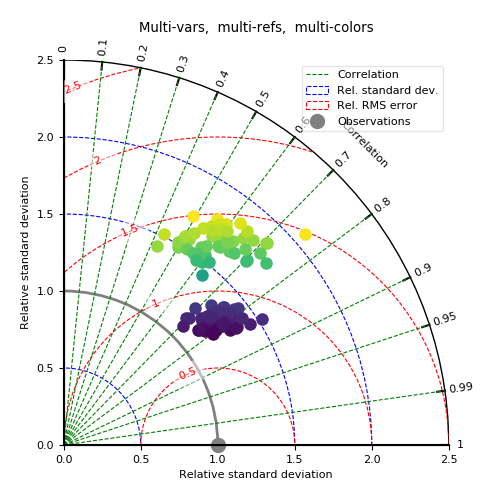

3.5.3.18. test_plot_taylor.py – Test function taylor() in different configurations¶






"""Test function :func:`~vacumm.misc.plot.taylor` in different configurations"""
from vcmq import taylor, rc, code_file_name, MV2, N
# Make some data
nt = 50
nens = 50
# - references
ref1 = MV2.sin(MV2.arange(nt, dtype='f'))*10.
ref2 = ref1*1.2
# - ensemble 1
dat1 = MV2.resize(ref1, (nens, nt))+N.resize(N.random.rand(nt*nens), (nens, nt))*20.
dat1.long_name = 'Set 1'
dat1.units = 'meters'
# - modele 2
dat2 = MV2.resize(ref2, (nens, nt))+N.resize(N.random.rand(nt*nens), (nens, nt))*40.
dat2.long_name = 'Set 2'
# Plot
rc('font', size=8)
kwplot = dict(figsize=(5,5), savefigs_pdf=False, show=False, close=True, savefigs_verbose=False)
basename = code_file_name(ext=False)+'_%i'
# - single variable
taylor(dat1[0], ref1, savefigs=basename%0, colors='cyan', title='Basic', **kwplot)
# - single variable without normalization
taylor(dat1[0], ref1, savefigs=basename%1, normalize=False, reflabel='Reference',
title='No normalization', **kwplot)
# - several variables with same ref
taylor([d for d in dat1], ref1, colors='cyan', savefigs=basename%2,
title='Several variables', **kwplot)
# - several variables with same ref with specified colors
taylor([d for d in dat1[:3]], ref1, colors = ['r', 'g', 'b'],
labels=['M#1', 'M#2', 'M#3'], savefigs=basename%3,
title='Explicit colors', **kwplot)
# - several variables with same ref with numeric scalar colors
taylor([d for d in dat1[:3]], ref1, colors = [0., 10., 5.], cmap='jet',
savefigs=basename%4, title='Scalar colors', **kwplot)
# - several variables with different refs and cenetered rms as colors
colors = [(d-ref1).std() for d in dat1]+[(d-ref2).std() for d in dat2]
taylor([d for d in dat1]+[d for d in dat2], [ref1]*nens+[ref2]*nens,
colors=colors, savefigs=basename%5,
title='Multi-vars, multi-refs, multi-colors', **kwplot)